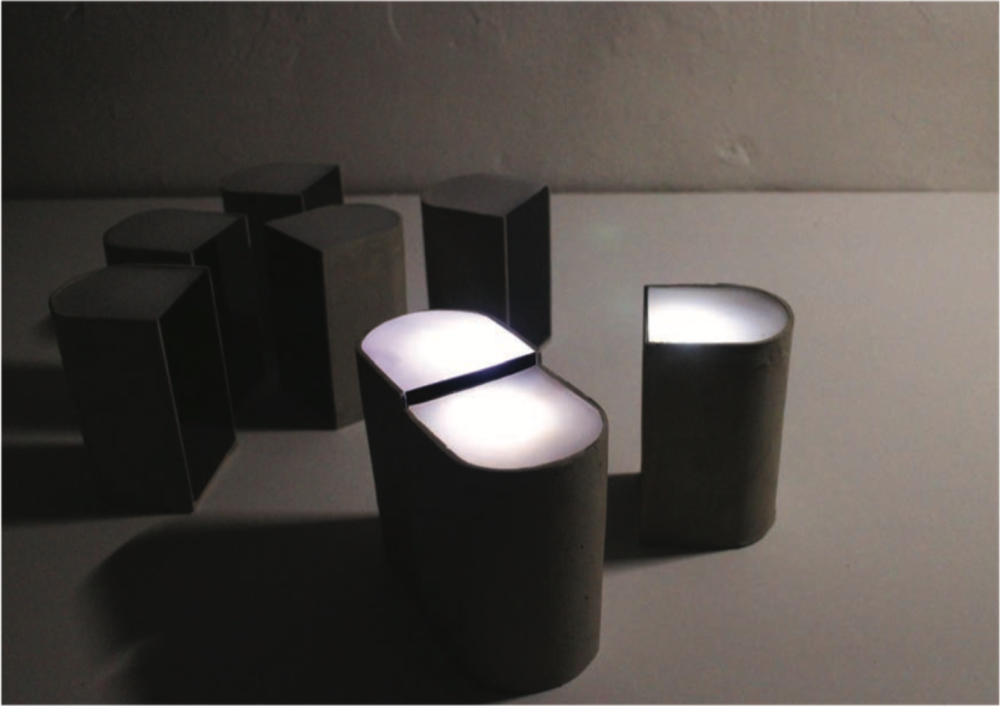

Contagious: Light, 2017, category, material.

8 pieces, 75 x 79 x 122 mm, Cement, Acrylic panel, Silicon pad, Arduino, 2017
In 2016, Korea suffered a major event of empeachment. Unlike the violent tendencies of previous rallies, this rally was peaceful and influential. I saw that individual opinions gathered and became an influential phenomenon. As the fire moves from one candle to another, the opinion of people gathered in that space can also be used to make a louder voice.
As a member of society at that wonderful moment,
I decide to design something that has the same feature like candlelight rallies. I thought the spread of opinion can show as an the infection of light.
Fire and light is same in the way that they are both luminant but their attributes are highly different. Like the fire carries from one part to another, the infection of light is unraveled in a digital manner.